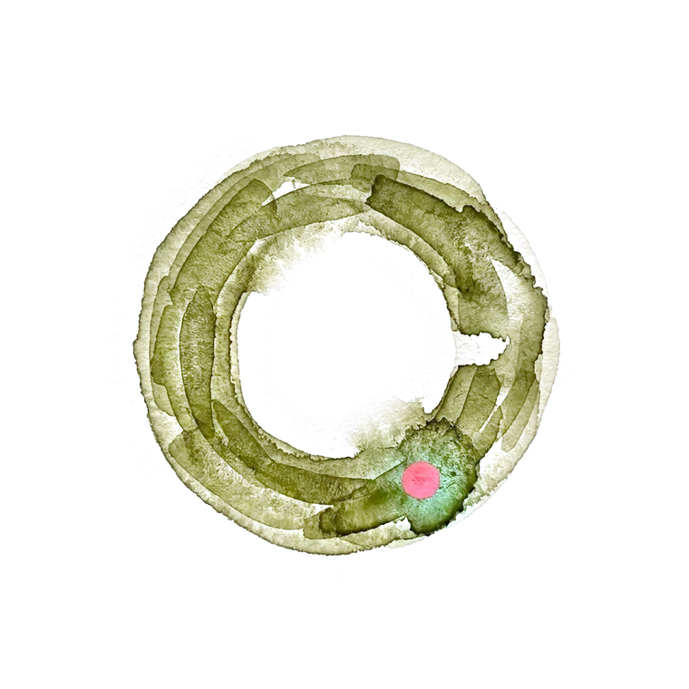

Find us

The address
No booking
Glen Waverley VIC 3150
Glen Waverley station is two minutes' walk: out past the bus interchange, straight up Kingsway, and we are the low green front on the right, between the bookshop and the barber.
Open in a mapThe room
Six stools
One long counter, six stools, and four tables along the window. It is one room and one morning a week, so it fills and then it empties.
It is quiet for the first hour and again at the end. Nobody will come and ask whether you would like anything else.
gam sia is Hokkien for thank you. It is what we say when you go.
The hours
All of them
- Sun
- 08 – 14
- Mon–Sat
- Closed
Sundays only. If a public holiday weekend is coming, telephone first.
Say hello
Not a form
The corner
Not to scale
5 Kingsway · Glen Waverley
Sun 08–14